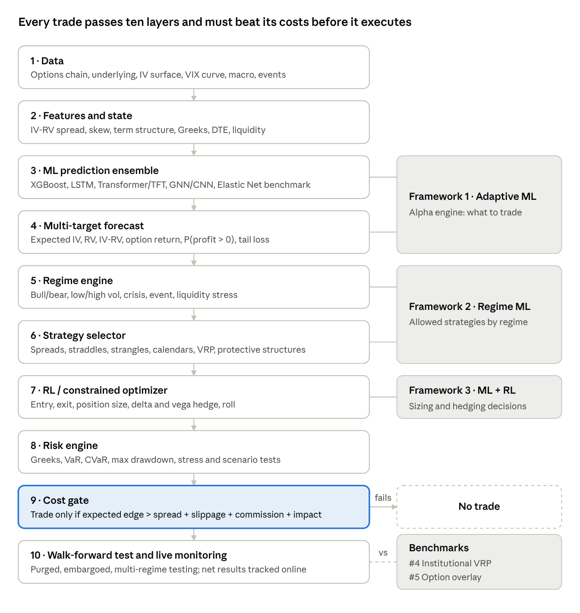

Project 9: AI Option Trading
A research-first project to find which machine-learning models and frameworks can trade listed options at a profit after real costs. So far: a reviewed study of 20 models, 20 success factors and 5 frameworks, and a 10-layer system design. The goal is the model with the highest net profit, then the highest win rate, with a reasonable number of trades.
Status: research & design · no backtests yet Started Sep 27, 2026 Last updated Oct 28, 2026
What the research found
No single model wins in options. The best model is the one with a stable edge after costs on data it never saw, not the one with the lowest prediction error.
Six core model families
| Model | Best role | Daily | Medium |
|---|---|---|---|
| XGBoost / LightGBM | IV and RV forecasts, trade selection | 5 | 5 |
| LSTM | Volatility sequences | 5 | 5 |
| Transformer / TFT | Many features, several horizons | 5 | 5 |
| GNN | Whole option chain / IV surface | 4.5 | 5 |
| PPO / deep hedging | Sizing, hedging, exits | 4.5 | 4 |
| Elastic Net control | Simple benchmark | 5 | 4 |
Ratings out of 5 are qualitative opinions from the research chat, not test results. The other 14 models stay as secondary benchmarks.
What matters most (rated 10/10)
- Data quality, including clean bid/ask quotes.
- No leakage: expiring contracts, IV derived from prices and stale quotes all leak future information.
- The right target: IV change, IV–RV gap or probability of a profitable trade, not the next option price.
- Real costs: a +0.20% forecast is worthless at a 0.35% cost.
- Out-of-sample testing: walk-forward in time, never random splits, with 2008, 2020 and 2022 tested separately.
Five frameworks
Profit rating by framework (qualitative, out of 5)
Ranked by the owner's first priority, profit. Ratings come from the research review, not from backtests.
| # | Framework | Main goal | Profit | Risk control | Intraday | Daily | Medium | Long |
|---|---|---|---|---|---|---|---|---|
| 1 | Adaptive ML volatility + relative value | Net risk-adjusted alpha | 5 | 4.5 | 4.5 | 5 | 5 | 4 |
| 3 | ML + deep hedging / RL | Net P&L after costs and risk | 5 | 5 | 4 | 5 | 5 | 4.5 |
| 2 | Regime-switching ML | Consistency across regimes | 4.5 | 5 | 4.5 | 5 | 5 | 5 |
| 4 | Institutional volatility risk premium benchmark | Steady premium harvesting | 4 | 4.5 | 3 | 4.5 | 5 | 5 |
| 5 | Institutional option overlay benchmark | Portfolio outcome | 3 | 5 | 2 | 4 | 4.5 | 5 |
Benchmark
Published research, an institutional index and option platforms this project competes with.
| Capability | This project | Bali et al. (2023) | Tan et al. (2024) | Cboe PUT index | ORATS / Option Alpha |
|---|---|---|---|---|---|
| Type | Research design | Academic paper (RFS) | Academic paper | Institutional index | Retail / pro platforms |
| Uses ML | ✓ 6 core families planned | ✓ Nonlinear ML beats linear | ✓ LSTM, linear, MLP, CNN | ✗ Fixed rule | ✗ Rule-based |
| Universe | ◐ Not chosen | ✓ US equity options, 12M+ obs. | ✓ S&P 100 options | S&P 500 puts | ✓ 5,000+ symbols (ORATS) |
| History tested | ✗ None yet | ✓ 1996–2020 | ✓ 2010–2023 | ✓ Since 1986 | ✓ Since 2007 (ORATS) |
| Costs | ◐ Cost-gate rule designed | ✓ Conservative costs | ✓ 0–50 bps tested | ✗ Gross index | ◐ User-set |
| Reported result | None yet | Profitable long-short after costs | LSTM Sharpe 1.33 (0 bps) → 0.39 (50 bps) | 10.1%/yr vs 9.8% S&P 500, lower volatility (1986–2015) | Backtest & automation tools |
✓ yes · ◐ partial · ✗ no. Based on public papers and vendor pages as of Oct 2026 (sources below). Results come from different markets, periods and costs, so they aren't directly comparable.
Costs decide the winner: Sharpe ratio at different trading costs
Tan, Roberts & Zohren (2024), S&P 100 straddles, 2010–2023. The deep model beats the best rule up to 20 bps and falls behind at 50 bps, unless trained with a turnover penalty.
Where we're ahead
A wider design than any single paper: forecasts, regimes, strategy choice, sizing, a cost gate and risk limits, with institutional benchmarks built in.
Where we're behind
No data, code or backtest yet. Every competitor has at least a decade of tested history.
Biggest lesson
The published profits come from simple, cross-sectional designs tested net of costs. Reproduce one of those first, then add layers only if they add profit.
Goals & objectives
1. Maximum profit
The top priority: the highest net profit after all trading and hedging costs, on data the model never saw.
2. Higher win rate
Among models with similar profit, prefer the one that wins more often.
3. Reasonable trade count
Enough trades to trust the result. Drawdown, tail-loss and margin limits act as pass/fail gates.
Approach
Recommended system: 10 layers

Signals flow top to bottom. Any trade whose expected edge doesn't clear total costs stops at the cost gate.
Validation plan
- Statistical: does it predict IV, RV and returns?
- Economic: net profit, win rate, drawdown.
- Execution: still profitable after spread, slippage, commission and impact?
- Crisis: 2008, 2020 and 2022 tested separately.
- Walk-forward: train 2010–2018, validate 2019–2020, test 2021, then roll forward a year.
- Paper trading before any capital.
Status & roadmap
Progress by phase (incl. new Phase 9)
Added from the benchmark review (Phase 9)
- Profit-first selection rule with a minimum trade count.
- Choose a data vendor and lock a point-in-time dataset.
- Rule benchmark: the Goyal–Saretto IV–RV straddle sort.
- Reproduce Bali et al.: ML on delta-hedged option returns.
- Reproduce Tan et al. with a turnover penalty, at 0–50 bps.
- IV baseline, Cboe PUT/BXM comparison, deep hedging later, multiple-testing control, paper trading.
Main challenges
- Data Option quotes with clean bid/ask history cost money; the vendor isn't chosen yet.
- Costs Option spreads are wide, and published edges shrink fast as costs rise.
- Overfitting A 20 strategies × 20 models grid needs multiple-testing corrections before any result counts.
Disclosures
This project is at the research stage and has no backtest or trading results. Ratings are qualitative opinions from the research review. Figures from other studies are the authors' own and aren't comparable with each other. Options can lose more than expected. Nothing on this page is investment advice.
Sources
- Bali, Beckmeyer, Mörke & Weigert (2023): Option Return Predictability with Machine Learning and Big Data
- Tan, Roberts & Zohren (2024): Deep Learning for Options Trading
- Goyal & Saretto (2009): Cross-Section of Option Returns and Volatility
- Kim & Oh (2026): ML approaches to implied volatility forecasting (Federal Reserve)
- Buehler et al. (2019): Deep Hedging
- Performance of the Cboe PutWrite indexes
- ORATS: options backtesting platforms compared · Option Alpha backtester